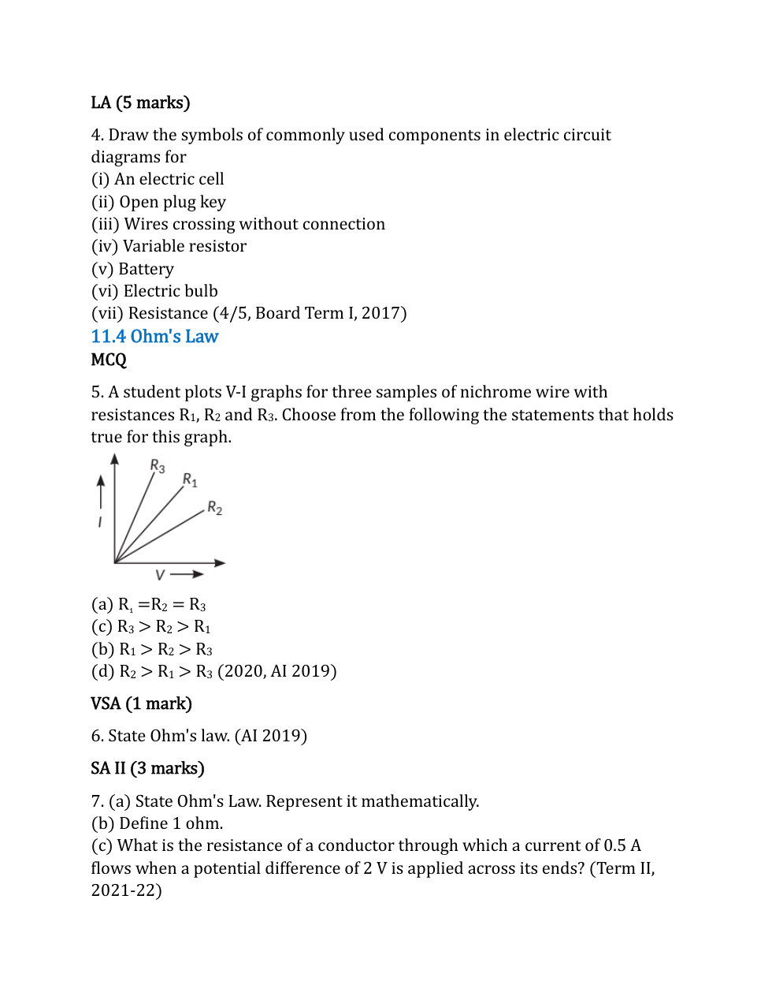

Previous Years CBSE Board Questions · Q6 · AI 2019 · PDF page 10
State Ohm's law.
CLASS 10 SCIENCE
Use the original paper for every question, graph and circuit diagram. The complete supplied PDF is preserved below, including its solutions. Select a starter question, or enter any other paper question number and prompt in the LMS answer workspace below this test. Typed, pen, photo and PDF answers can be combined.
Paper page 10 of 64

State Ohm's law.
(a) State Ohm's law. Represent it mathematically. (b) Define 1 ohm. (c) What is the resistance of a conductor through which a current of 0.5 A flows when a potential difference of 2 V is applied across its ends?
State Ohm's law. Draw a labelled circuit diagram to verify this law in the laboratory. If you draw a graph between the potential difference and current flowing through a metallic conductor, what kind of curve will you get? Explain how you would use this graph to determine the resistance of the conductor.
AI feedback is provisional. Teachers verify the source question and assign final marks.